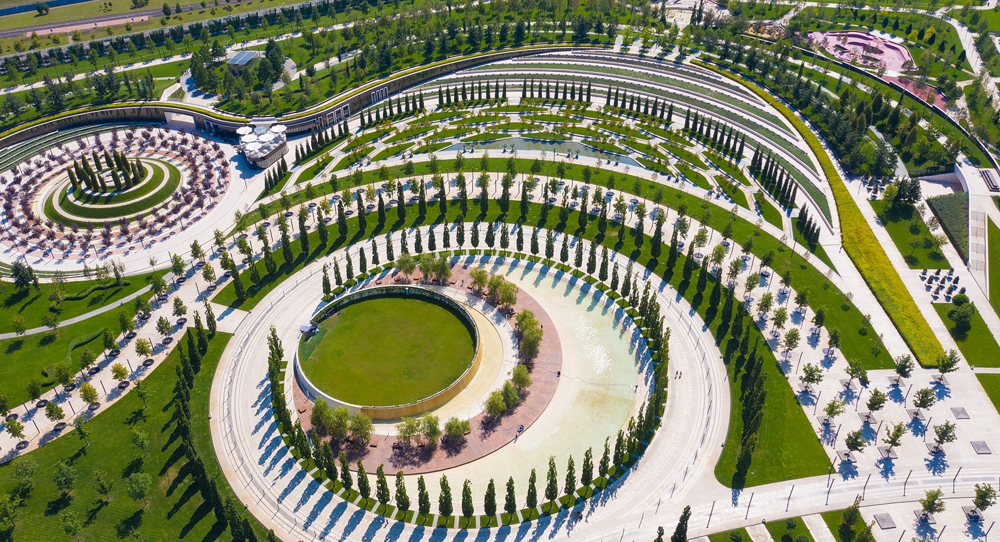
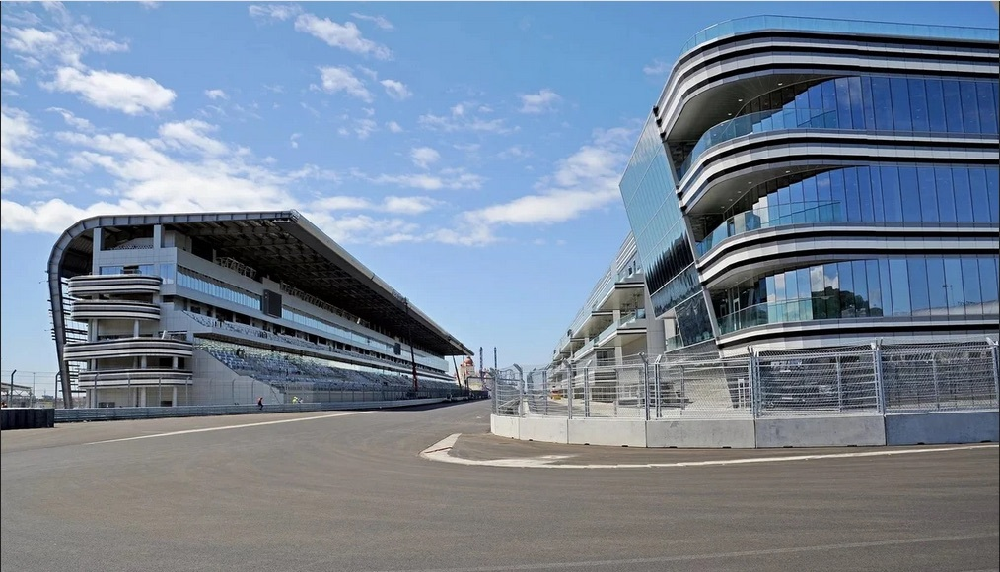
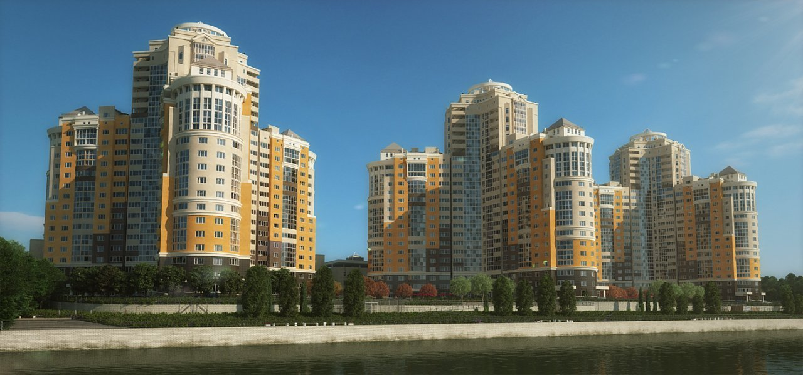
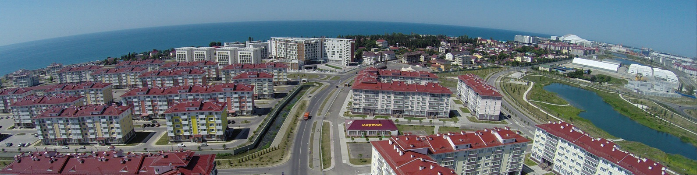
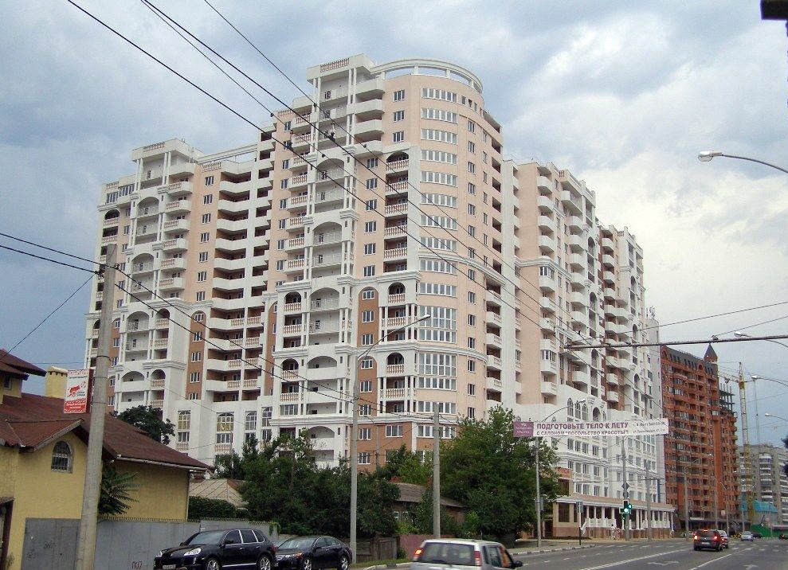
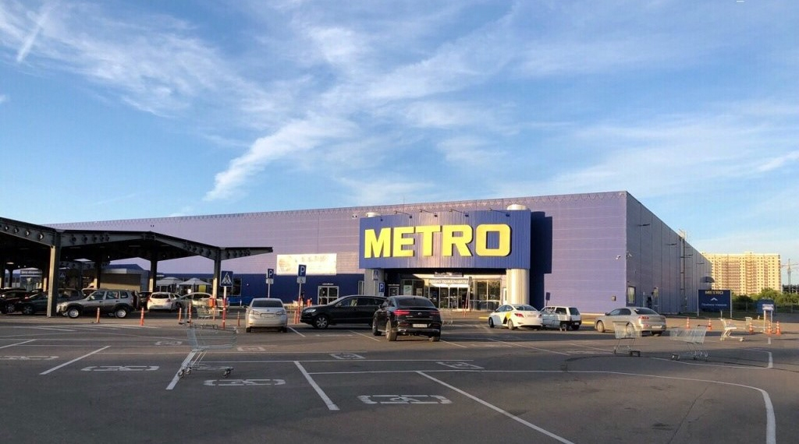
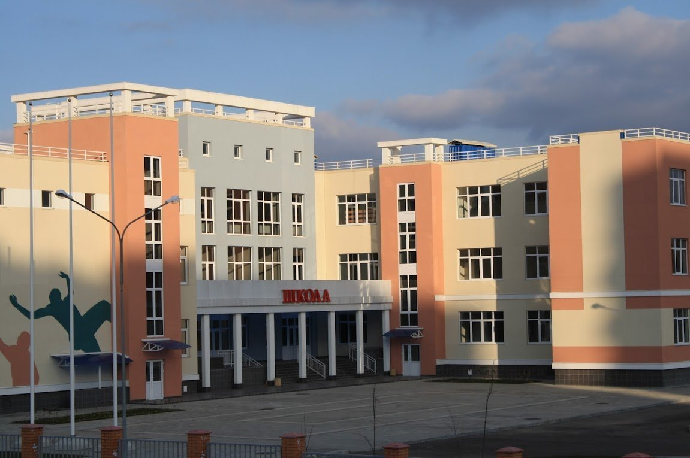

Жилые, общественные и производственные здания
Проектная и рабочая документация для нового строительства — от частных объектов до крупных комплексов.

Инженеры-проектировщики · Краснодар
Коллектив инженеров с многолетним опытом работы в ведущих проектных организациях Краснодара. От жилых комплексов до объектов олимпийского уровня.
О бюро
Наши специалисты участвовали в создании знаковых объектов юга России: городского парка «Краснодар», трассы «Формулы-1» в Сочи, олимпийской инфраструктуры, жилых комплексов и социальных объектов.
Мы сопровождаем проект на всех стадиях — от первых эскизов до положительного заключения экспертизы — и берёмся за задачи, от которых отказываются другие: сложные грунты, реконструкция, усиление конструкций, специальные технические условия.
Опыт успешного прохождения Главгосэкспертизы, Крайгосэкспертизы и коммерческих экспертных организаций.
Членство в СРО Союз «Региональное объединение проектировщиков Кубани» (рег. №253), сотрудники — в Национальном реестре специалистов НОПРИЗ.
Проектируем в лицензионном программном обеспечении — расчётные комплексы и САПР.
Услуги
Проектная и рабочая документация для нового строительства — от частных объектов до крупных комплексов.
Обследование, перепланировка, изменение назначения и модернизация существующих объектов.
Расчёт и проектирование усиления несущих конструкций при надстройке, износе или изменении нагрузок.
Свайные, плитные и комбинированные фундаменты на просадочных, слабых и обводнённых грунтах Кубани.
Подготовка и согласование СТУ для объектов, выходящих за рамки действующих нормативов.
Внутренние и наружные сети: водоснабжение, канализация, отопление, вентиляция, электроснабжение.
Портфолио
Знаковые объекты, в создании которых участвовали специалисты бюро в составе проектных команд.
Проектная документация разработана ООО «ГМП Интернейшнл» совместно с ООО «Стройпроект-XXI»

Трасса для автогонок и объекты инфраструктуры. Проект — TILKE GmbH & Co KG совместно с ООО «Стройпроект-XXI»

Проектная документация разработана ООО «Стройпроект-XXI»

Здания и сооружения уровня 3★ в Имеретинской низменности на период XXII Олимпийских зимних игр. Проект — ООО «Стройпроект-XXI»

Проектная документация разработана ООО «Стройпроект-XXI»

Проектная документация разработана ООО «Стройпроект-XXI»

Проектная документация разработана ООО «Стройпроект-XXI»
Расскажите о вашем объекте — оценим сроки и стоимость проектирования.
Написать намКонтакты